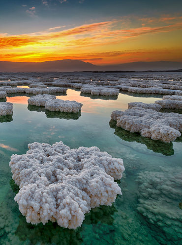
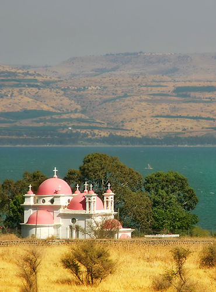
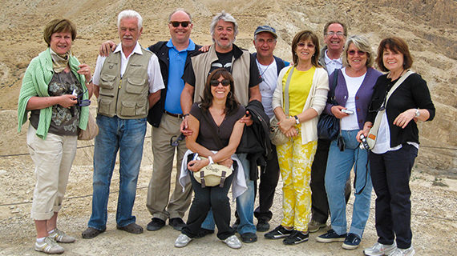

Private journeys across Israel
Israel, told personally.
Walk through history, faith and landscape with Isaac Charig — a licensed Israeli guide for private travellers from Europe, the United States and Canada.
- Guide
- Licensed by Israel's Ministry of Tourism
- Format
- Private, personal journeys
- Languages
- English · Italiano · Română


A different way to see a country
Not a checklist of landmarks. A connected story.
Israel holds thousands of years within a remarkably small landscape. Isaac connects architecture, sacred places, archaeology, communities and everyday life so that each stop becomes part of a larger picture.
The journey index
Choose a direction. Isaac brings the context.
Eight starting points, each with a different rhythm — sacred cities, desert horizons, Mediterranean coastlines and the landscapes where traditions began.
The most spiritual journey
Old City of Jerusalem
Sacred places, stone lanes and communities shaped by centuries of faith and history — explored with space to ask, listen and understand. Mount of Olives, Gethsemane, the Holy Sepulchre, the Via Dolorosa, the Western Wall, the four quarters and the Church of the Nativity in Bethlehem.
Ask Isaac about this routeStart with what moves you
You do not need to know the map yet.
Choose the part of Israel you want to understand. The site will point you toward a few useful starting routes.
Old City of Jerusalem · Dead Sea & Masada · Modern Jerusalem

Meet your guide
Places become memorable when their stories make sense.
My name is Isaac Charig. I am a tour guide licensed by the Israeli Ministry of Tourism, specializing in accompanying travellers from Europe, the United States and Canada.
For me, guiding is not only about names and dates. It is about helping people connect what they see with the cultures, beliefs and human choices that shaped it.
I lived in Italy for almost thirty years — serving as vice-rabbi of the Jewish communities of Venice and Trieste — before returning to Israel in 2008 to make my greatest passion a job. I speak Hebrew, Italian, English and Romanian, and I love working with Italian travellers.
“His culture elevates him to the role of mentor — a carefree educator, cultured and discreet.”
A simple beginning
The journey starts with a conversation.
No complicated booking system. Share your dates, group size and interests; Isaac will reply personally with availability and the next step.
-
01
Tell me about your trip
Dates, travellers and the places or themes that interest you.
-
02
Receive a personal reply
Isaac confirms availability, fees and the most suitable route.
-
03
Explore with context
Meet, travel and discover Israel at a thoughtful pace.
Your trip brief
Where would you like the story to begin?
Complete the short note below. The button opens WhatsApp with your information already prepared — nothing is submitted to a database.